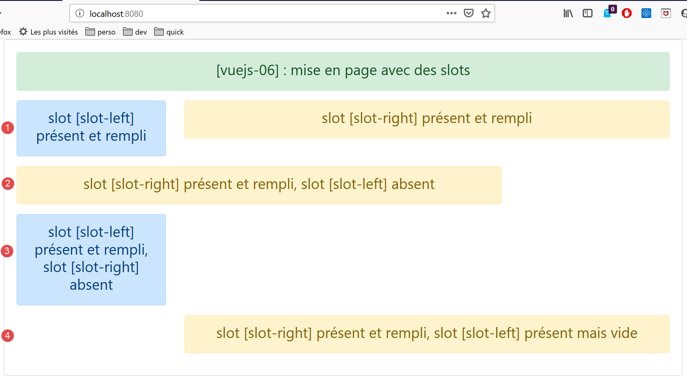

8. Projekt [vuejs-06]: Layout einer Ansicht mit Slots

8.1. Das Hauptskript [main.js]
Das Hauptskript [main.js] bleibt unverändert.
8.2. Die Hauptkomponente [App]
Der Code der Komponente [App] lautet wie folgt:
<template>
<div class="container">
<b-card>
<b-alert show variant="success" align="center">
<h4>[vuejs-06] : mise en page avec des slots</h4>
</b-alert>
<Content />
</b-card>
</div>
</template>
<script>
import Content from './components/Content'
export default {
name: "app",
// verwendete Komponenten
components: {
Content
}
};
</script>
Die Komponente [App] führt eine neue Komponente namens [Content] ein (Zeilen 7, 14, 19).
8.3. Die Komponente [Layout]
Die Komponente [Layout] dient dazu, ein Layout für die Ansichten der Anwendung zu definieren:
<template>
<!-- Zeile -->
<b-row>
<!-- Feld mit drei Spalten -->
<b-col cols="3" v-if="left">
<slot name="slot-left" />
</b-col>
<!-- neunsäuliges Feld -->
<b-col cols="9" v-if="right">
<slot name="slot-right" />
</b-col>
</b-row>
</template>
<script>
export default {
name: "patron",
// Parameter
props: {
left: {
type: Boolean
},
right: {
type: Boolean
}
}
};
</script>
Kommentare
- Die Komponente [Layout] definiert eine einzelne Zeile (Zeilen 3–12). Diese ist in zwei Spalten unterteilt:
- eine Spalte, die aus 3 Bootstrap-Spalten besteht (Zeilen 5–7);
- eine Spalte, die aus 9 Bootstrap-Spalten besteht (Zeilen 9–11);
- Zeile 5: Das Vorhandensein der linken Spalte (Zeilen 5–7) hängt vom Wert des Parameters [left] ab, der in der Eigenschaft [props] der Komponente definiert ist (Zeilen 20–22);
- Zeile 9: Das Vorhandensein der rechten Spalte (Zeilen 9–11) hängt vom Wert des Parameters [right] ab, der in der Eigenschaft [props] der Komponente definiert ist (Zeilen 23–25);
- Die Werte der Parameter [left, right] müssen von einer übergeordneten Komponente der Komponente [Layout] festgelegt werden;
- Zeile 6: Der Inhalt der linken Spalte wird nicht festgelegt. Diese Spalte erhält lediglich mit dem Tag <slot> einen Namen. Hier heißt sie [slot-left]. Eine Komponente, die die Komponente [Content] verwendet, muss angeben, was sie in den Bereich mit dem Namen [slot-left] einfügen möchte;
- Zeile 10: Die rechte Spalte wird [slot-right] heißen;
8.4. Die Komponente [Right]
Die Komponente [Right] lautet wie folgt:
<template>
<!-- eine Meldung in einer Warnung -->
<b-alert show variant="warning" align="center">
<h4>{{msg}}</h4>
</b-alert>
</template>
<!-- Skript -->
<script>
export default {
name: "droite",
// Parameter
props: {
msg: String
}
};
</script>
- Zeilen 3–5: Die Komponente [Right] zeigt eine Meldung in einer Warnmeldung vom Typ [warning] an. Diese Meldung [msg] ist in Zeile 14 als Parameter der Komponente definiert. Die übergeordnete Komponente muss ihr daher einen Wert zuweisen;
8.5. Die Komponente [Left]
Die Komponente [Left] lautet wie folgt:
<template>
<!-- eine Meldung in einer Warnung vom Typ „primary“ -->
<b-alert show variant="primary" align="center">
<h4>{{msg}}</h4>
</b-alert>
</template>
<!-- Skript -->
<script>
export default {
name: "gauche",
// Parameter
props: {
msg: String
}
};
</script>
- Zeilen 3–5: Die Komponente [Left] zeigt eine Meldung in einer Warnmeldung vom Typ [primary] an. Diese Meldung [msg] ist in Zeile 14 als Parameter der Komponente definiert. Die übergeordnete Komponente muss ihr daher einen Wert zuweisen;
8.6. Die Komponente [Content]
Zur Erinnerung: Die Komponente [Content] ist die Komponente, die von der Hauptansicht [App.vue] angezeigt wird:
<template>
<div>
<!-- linke und rechte Spalte ausgefüllt -->
<Layout :left="true" :right="true">
<Right slot="slot-right" msg="slot [slot-right] présent et rempli" />
<Left slot="slot-left" msg="slot [slot-left] présent et rempli" />
</Layout>
<!-- linke Spalte leer, rechte Spalte ausgefüllt -->
<Layout :left="false" :right="true">
<Right slot="slot-right" msg="slot [slot-right] présent et rempli, slot [slot-left] absent" />
</Layout>
<!-- linke Spalte ausgefüllt, rechte Spalte fehlt -->
<Layout :left="true" :right="false">
<Left slot="slot-left" msg="slot [slot-left] présent et rempli, slot [slot-right] absent" />
</Layout>
<!-- linke Spalte vorhanden, aber nicht ausgefüllt, rechte Spalte ausgefüllt -->
<Layout :left="true" :right="true">
<Right slot="slot-right" msg="slot [slot-right] présent et rempli, slot [slot-left] présent mais vide" />
</Layout>
</div>
</template>
<!-- Skript -->
<script>
import Layout from "./Layout";
import Left from "./Left";
import Right from "./Right";
export default {
name: "contenu",
// Komponenten
components: {
Layout,
Left,
Right
}
};
</script>
Visuelle Darstellung

Kommentare
- Die Komponente [Layout] wird viermal verwendet (Zeilen 4–7, 9–11, 13–15, 17–19). Wenn man bedenkt, dass die Komponente [Layout] eine Zeile definiert, definiert die oben genannte [template] vier Zeilen. Man bedenke außerdem, dass die Zeile der Komponente [Layout] zwei Spalten definiert:
- eine Spalte namens [slot-left], die die drei linken Bootstrap-Spalten einnimmt;
- eine Spalte mit dem Namen „[slot-Right]“, die die 9 rechten Bootstrap-Spalten einnimmt;
- Zeilen 4–7: definiert eine Zeile [1], in der die Komponente [Left] die Spalte [slot-left] und die Komponente [Right] die Spalte [slot-right] einnimmt;
- Zeilen 9–11: Definiert eine Zeile [2], in der die Spalte [slot-left] nicht angezeigt wird und die Komponente [Right] die Spalte [slot-right] belegt;
- Zeilen 13–15: Definiert eine Zeile [3], in der die Spalte [slot-right] nicht angezeigt wird und die Komponente [Left] die Spalte [slot-left] einnimmt;
- Zeilen 17–19: definiert eine Zeile [4], in der die Spalte [slot-left] angezeigt wird ([:left=’true’]), jedoch nicht ausgefüllt ist, und die Komponente [Right] die Spalte [slot-right];
Letztendlich diente die Komponente [Layout] als Layout für die Komponente [Content].